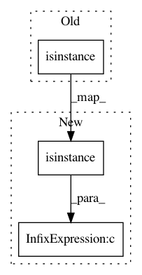

5d4f395dadf08e6c9b52af1dc44a696de1baf489,rllab/misc/logger.py,,stub_to_json,#Any#,254
Before Change
data[k] = stub_to_json(v)
data["_name"] = stub_sth.proxy_class.__module__ + "." + stub_sth.proxy_class.__name__
return data
elif isinstance(stub_sth, instrument.StubAttr):
return dict(
obj=stub_to_json(stub_sth.obj),
attr=stub_to_json(stub_sth.attr_name)
After Change
data[k] = stub_to_json(v)
data["_name"] = stub_sth.proxy_class.__module__ + "." + stub_sth.proxy_class.__name__
return data
elif isinstance(stub_sth, instrument.StubAttr) or isinstance(stub_sth, instrument2.StubAttr):
return dict(
obj=stub_to_json(stub_sth.obj),
attr=stub_to_json(stub_sth.attr_name)
In pattern: SUPERPATTERN
Frequency: 3
Non-data size: 3
Instances
Project Name: rail-berkeley/softlearning
Commit Name: 5d4f395dadf08e6c9b52af1dc44a696de1baf489
Time: 2018-05-22
Author: haarnoja@berkeley.edu
File Name: rllab/misc/logger.py
Class Name:
Method Name: stub_to_json
Project Name: rail-berkeley/softlearning
Commit Name: 635aa31be0b524968fa1b336764f48b8f3e16c99
Time: 2018-05-22
Author: kristian.hartikainen@gmail.com
File Name: examples/mujoco_all_sac_real_nvp.py
Class Name:
Method Name: get_variants
Project Name: apple/coremltools
Commit Name: 169159b9cc03d1c5acb4a34d1aad2d8abafd0cf1
Time: 2019-07-11
Author: aseem.elec@gmail.com
File Name: coremltools/converters/nnssa/builder.py
Class Name: GraphBuilder
Method Name: _maybe_add_const